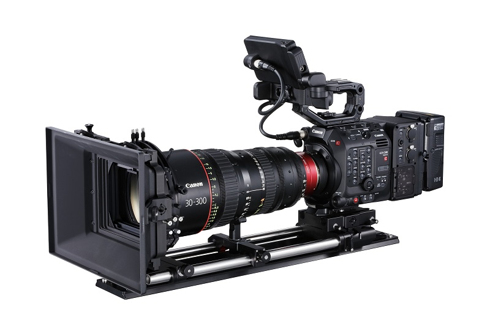

Price: 27m
Canon EOS 850D (Rebel T8i) DSLR RED expands its DSMC3 camera system with the V-Raptor XL 8K VV
Description
RED expands its DSMC3 camera system with the V-Raptor XL 8K VV Red V-Raptor XL The new V-Raptor XL, which leverages the V-Raptor 8K VV + 6K S3 multi-format sensor but places it in an XL camera body, is the latest addition to the RED DSMC3 camera system.
The V-Raptor XL incorporates the 8K multi-format sensor housed within the compact and modular V-Raptor body, allowing filmmakers to shoot in 8K wide format, in S35 6K, and even capture up to 600 fps at 2K. The sensor boasts the “highest dynamic range on record”, twice as fast scan time and “cleanest” shadow performance of any RED camera.
Jarred Land, president of RED, is proud of the new V-Raptor, which he describes as “one of the most innovative cameras we’ve launched”. “The XL builds off our mighty V-RAPTOR and adds more outputs, additional power flexibility and an incredible internal ND system. The entire RED team is so proud of the advancements this brings to cinematographers, and we can’t wait to see what they create,” he concludes.
Price: 27m
Canon EOS 850D (Rebel T8i) DSLR Camera
Description
Canon EOS 850D (Rebel T8i) DSLR Camera
The Canon EOS 850D is a versatile DSLR with well-rounded photo and video capabilities. Featuring a 24.1MP APS-C-format CMOS sensor and DIGIC 8 image processor, high-resolution stills and UHD 4K video recording are supported, along with a wide ISO 100-25600 sensitivity range to suit working in a variety of lighting conditions. Benefitting the imaging attributes, the sensor’s design also facilitates Dual Pixel CMOS AF, which uses phase-detection autofocus for quick, accurate, and smooth focusing performance when recording movies or shooting stills in live view. When shooting stills using the optical viewfinder, a 45-point all cross-type phase-detection system is used for quick and accurate focusing in a variety of shooting scenarios.
The physical design incorporates a 3.0″ 1.04m-dot touchscreen LCD, which uses a vari-angle design to permit easier viewing from high, low, and even front-facing angles. Additionally, built-in Wi-Fi with NFC is available for quick and convenient pairing with a smartphone or tablet for wireless image sharing, and Bluetooth is also featured for image sharing to and remote camera control from a mobile device.